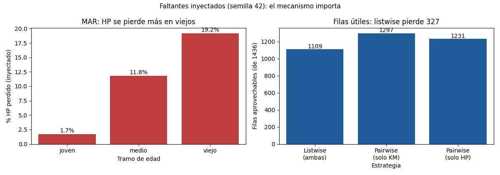

Unidad 4 · Datos faltantes e imputación · Lección 0015
Faltantes: por qué faltan y qué se pierde
Win de hoy: distinguir MCAR / MAR / MNAR, inyectar faltantes documentados (semilla 42: 139 KM + 205 HP) y medir lo que listwise tira (327 filas).
1 · No todos los huecos son iguales (MCAR / MAR / MNAR)
El mecanismo —por qué falta— decide el tratamiento. Tres casos con historias Toyota:
- MCAR (falta al azar total): el sensor del service se rompió días sueltos y 139 KM se perdieron sin patrón. Lo que queda es representativo; el único costo es tamaño.
- MAR (falta según otra columna): las fichas viejas en papel perdieron el HP (1,7 % en jóvenes, 19,2 % en viejos). El patrón se explica con la edad observada: se puede corregir.
- MNAR (falta según el propio valor): vendedores que ocultan KM altos. Acá el hueco esconde justo lo que querés saber: es el peor caso y ningún truco mecánico lo arregla del todo.
2 · La inyección documentada (el CSV no trae vacíos)
ToyotaCorolla.csv tiene 0 celdas vacías (0004), así que para practicar fabricamos los faltantes con semilla fija y lo documentamos. Esta inyección vale para toda la Unidad 4:
import numpy as np
rng = np.random.default_rng(42) # semilla: reproducible
m_km = rng.random(len(df)) < 0.10 # MCAR: 139 KM (~10 %)
tramos = pd.cut(df["Age_08_04"], [0, 30, 60, 81], labels=["joven", "medio", "viejo"])
p = tramos.map({"joven": 0.05, "medio": 0.12, "viejo": 0.20})
m_hp = rng.random(len(df)) < p.to_numpy(dtype=float) # MAR: 205 HP
df.loc[m_km, "KM"] = np.nan
df.loc[m_hp, "HP"] = np.nan3 · Listwise vs pairwise: tirar filas vs aprovechar columnas
- Listwise
(
dropna()): tira las 327 filas con algún hueco (22,8 %) y se queda con 1109 completas. Simple y honesto, pero caro: casi un cuarto afuera. Solo es insesgado con MCAR. - Pairwise:
cada cálculo usa lo disponible: media de KM con 1297, media de HP con 1231, correlación KM–HP con 1109.
Aprovecha más, pero cada número sale de una muestra distinta (pandas lo hace por defecto en
corr()).
Ninguno rellena: ambos conviven con huecos. Rellenarlos (imputación) empieza en la 0016.
4 · Figura: el MAR a la vista y el costo listwise

Regenerar la figura (mismo resultado versionado en assets/img/toyota/):
python scripts/make_figures.py --only faltantes-mecanismos-listwise5 · Quiz (auto-chequeo inmediato)
6 · Fuente primaria y cierre
Para profundizar (1 fuente): Kuhn & Johnson, Applied Predictive Modeling — capítulo de preprocesamiento y datos faltantes (appliedpredictivemodeling.com, también en RESOURCES.md del curso).
¿Algo no quedó claro? Preguntame al agente: qué mecanismo tiene tu hueco, cuándo listwise alcanza, o por qué la semilla fija importa. Esa pregunta vale más que releer.